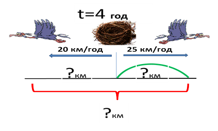
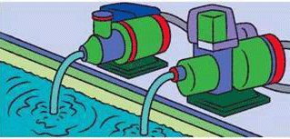

- 7934 - 64 · 84 + 6539 : 13 - 1105
- порівняйте (543 + 57) : 12 і 123•3 -197
- (26714 : 38 + 998) · 34
- (17806 : 58 + 893) - 37 - 28
- більше...

Івано-Франківська гімназія №2
математика для вступника
 Адреса:
Адреса:Івано-Франківськ,
Шухевичів, 35 ☎+8(0342) 53-42-11 ✉sekretar_gimnazia2if@ukr.net http://gimnazija.com.ua
Обчислення виразів

Рівняння

- 56 : х - 6 = 8
- 800 + (х - 130) = 2014
- 124 + 78 · х = 592
- (х - 84) · 11 = 500 - 324
- більше...
Задачі на рух

- Автомобіль рухався 3 год з швидкістю 60 км/год і 2 год з швидкістю 65 км/год. Скільки часу витратить мотоцикліст на той же шлях, рухаючись зі швидкістю 62 км/год?
- Мотоцикліст рухався 3 години зі швидкістю 52 км/год. Скільки часу витратить автомобіль, щоб проїхати цей же шлях, рухаючись зі швидкістю 81 км/год?
- З міста на автостраду виїхав автобус зі швидкістю 60 км/год. Через 2 год йому навздогін виїхав легковий автомобіль. З якою швидкістю повинен їхати легковий автомобіль, щоб наздогнати автобус на відстанні 300 км від міста?
- більше...
Задачі на роботу

- Потрібно надрукувати 1080 сторінок тексту. Одна друкарка може виконати цю роботу за 45 робочих днів, а друга - за 36. За скільки днів виконають усю роботу дві друкарки, якщо вони працюватимуть разом?
- 24 тони води перший насос може викачати за 6 годин, а другий – за 3 години. Скільки тон води викачають за 1 годину обидва насоси, якщо працюватимуть разом?
- 72 ц сіна коровам вистачить на 12 днів, а вівцям на 24 дні. На скільки днів вистачить цього сіна коровам та вівцям разом?
- більше...
Геометричні задачі
- Периметр прямокутника дорівнює 70 см. Його довжина більша за ширину на 1 см. Яка довжина сторін прямокутника?
- Сторона рівностороннього трикутника дорівнює 12 дм. Знайти площу квадрата, периметр якого дорівнює периметрові цього трикутника
- Площа одного квадрата дорівнює 81 квадратних сантиметрів. Сторона другого квадрата у 3 рази довша від сторони першого. На скільки сантиметрів периметр першого квадрата менший від периметра другого?
- більше...
Дроби
- На складі було 2т 4ц овочів. Шосту частину овочів становив буряк, восьму частину – морква, а решта – картопля. На скільки більше було картоплі, ніж буряка?
- Туристи, проїхавши половину визначеного маршруту і ще 50 км, з`ясували, що їм залишилося проїхати ще четверту частину шляху. Визначити довжину туристичного маршруту.
- Відстань між двома містами автомобіль подолав за 15 год зі швидкістю 72 км/год. Скільки годин потрібно автомобілю на зворотній шлях, якщо його швидкість становитиме 3/4 від початкової?
- більше...
Геометричні задачі
Одиниці вимірювання